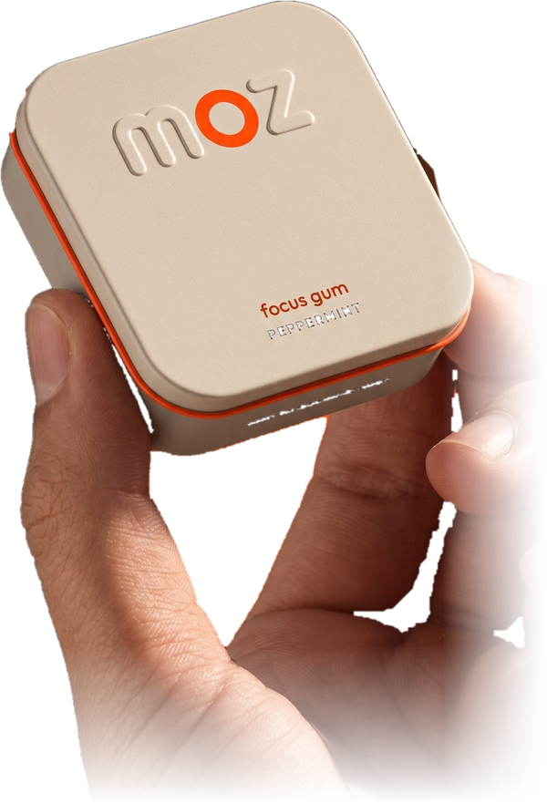
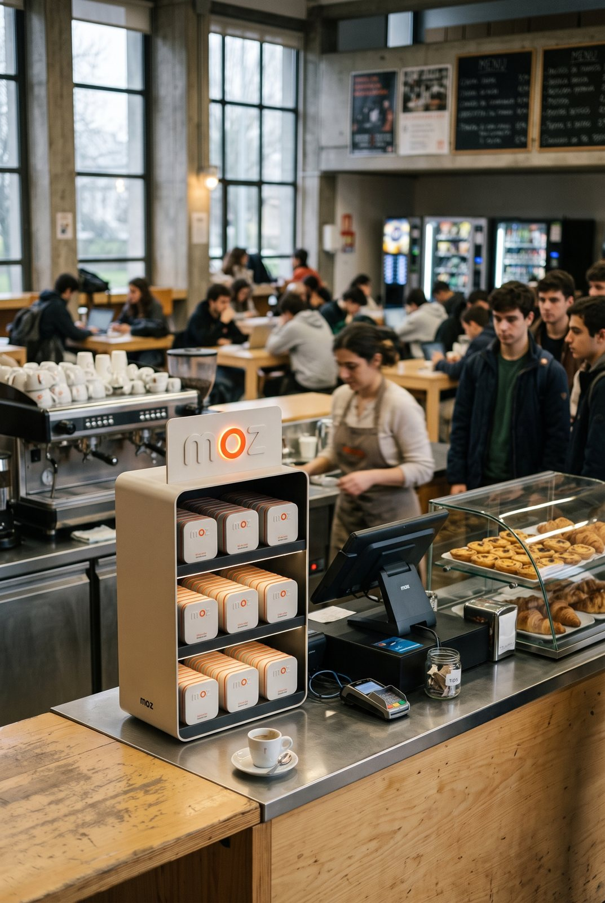
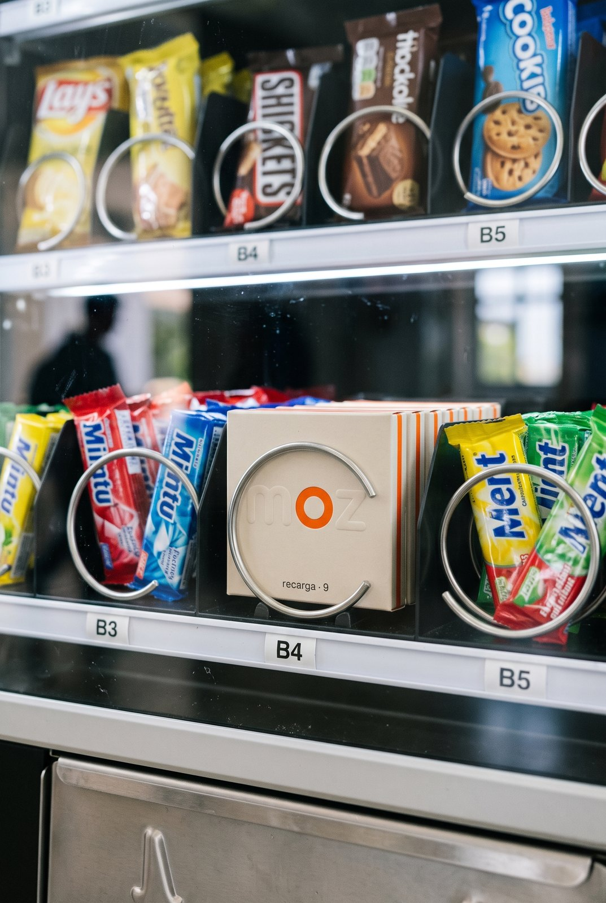

Sem açúcar. Sem distrações.
A pastilha para os momentos que contam. Cafeína natural, L-teanina e vitaminas B, sem açúcar, numa lata que cabe no bolso.

Momentos
A MOZ adapta-se ao teu dia. É para aqueles momentos em que queres manter o ritmo e ainda há trabalho pela frente.
Semanas de matéria e horas seguidas à secretária ou na biblioteca. Quando o estudo se estende e mais um café já não apetece.
Para as horas longas.
Tarefas a meio e uma tarde que se arrasta. Quando ainda falta metade do dia e queres manter o ritmo.
Sem açúcar e sem sair do lugar.
Uma apresentação, uma entrevista, uma conversa importante. Os minutos antes, em que queres estar presente.
Entra na zona.
Não é recomendado o consumo de mais de uma lata por dia.
Fórmula
Valores por pastilha.
40 mg
Cafeína natural, de grão de café verde. Cerca de meio café.
L-teanina
Aminoácido do chá verde, presente naturalmente no chá.
B6 + B12
Vitaminas que contribuem para a redução do cansaço e da fadiga.
0 g
De açúcar. Adoçada com xilitol.
Suplemento alimentar com cafeína. Não é recomendado o consumo de mais de uma lata por dia. Não recomendado a crianças nem a mulheres grávidas ou a amamentar. Não substitui um regime alimentar variado.
Onde vais encontrar
Nos bares e cafetarias das faculdades, nas vending machines dentro das universidades, nos quiosques à volta do campus e online. Um expositor pequeno, ao lado da máquina do café, porque a ideia não é substituir o café, é juntar-se a ele.


Ponto de situação
Estamos a trabalhar em duas frentes. De um lado, a validação de mercado: recolher feedback junto dos consumidores, com a fórmula já validada. Do outro, a produção: preparar a lata, as recargas e os primeiros pontos de venda. Se quiseres ficar a par de cada passo, deixa o teu email. Vem ser MOZ (Master of Zone).
Entra na zona.
focus gum
PEPPERMINT
Desliza para abrir